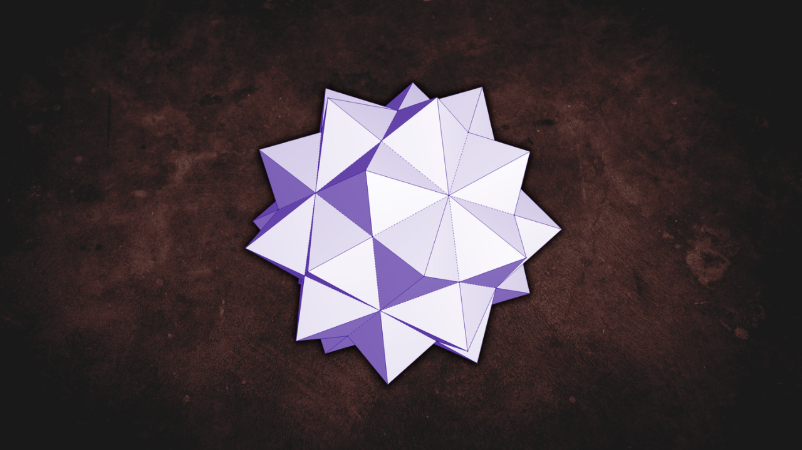
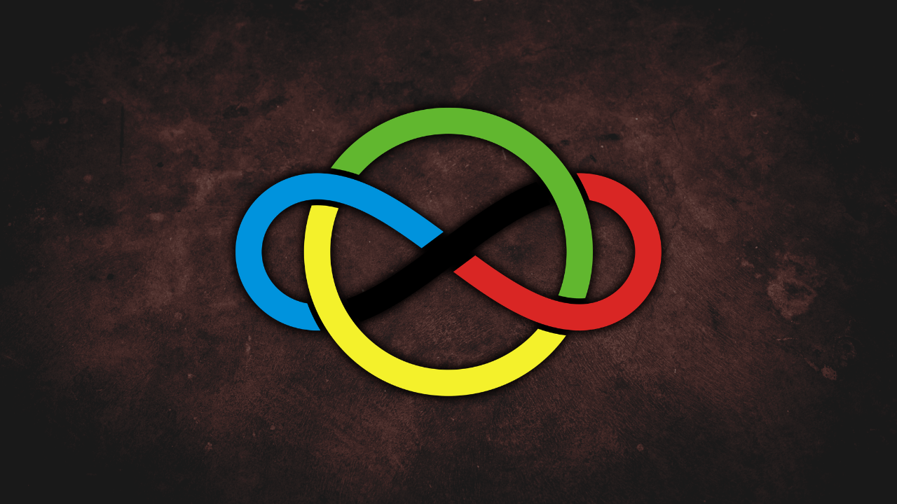
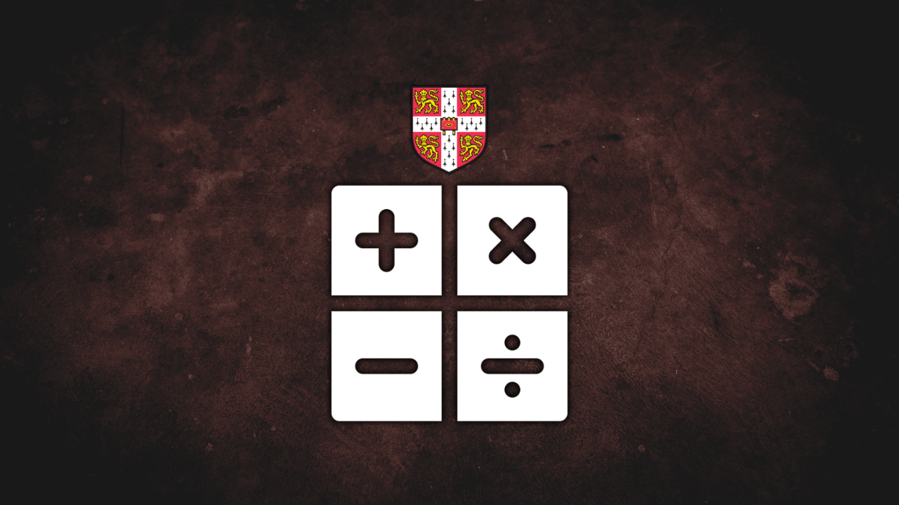

Teaching
Explore all my courses and lecture materials on math and science.

Online • Formal Science
Math Problem Solving [SMA]
Comprehensive high school mathematics covering year 10-12.

Offline • Formal Science
Olimpiade Matematika SMA
Advanced training for various high school competitions from OSN to IMO.
Offline • Natural Science
Olimpiade Astronomi SMA
Advanced training for various high school competitions from OSN to IMO.

Offline • Formal Science
AS & A Level Mathematics
Features Pure Mathematics, Mechanics, and Probability & Statistics.
Offline • Formal Science
AS & A Level Computer Science
Features theoretical concepts and practical programming skills.